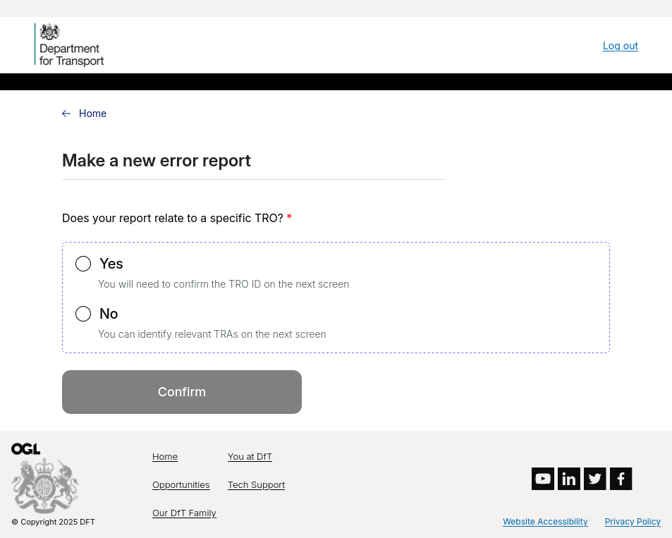
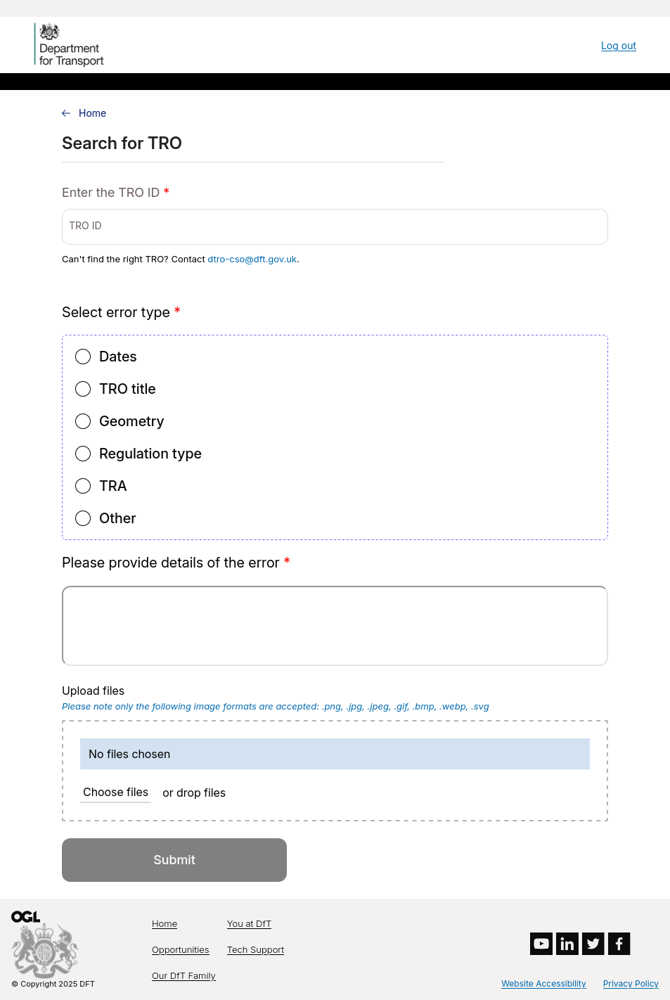
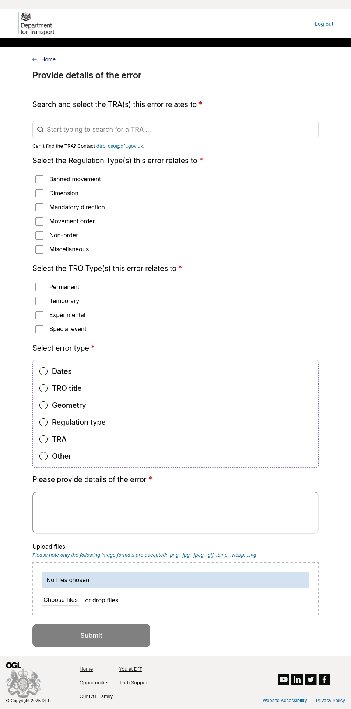
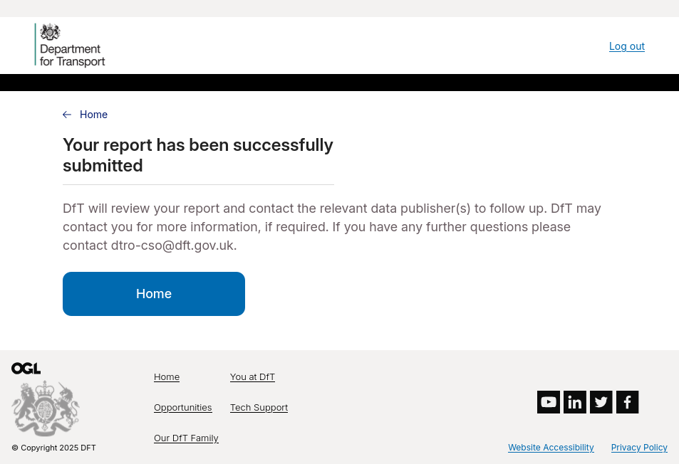

Error Reports¶
Note
This functionality is only available in the production environment.
The portal includes the abilty to submit reports if you think you may have identified issues with the D-TRO data. Submitted D-TRO data is validated against a known schema to ensure it is valid, but content is not checked. If you think you have identified issues with D-TRO data content, you can use this service to submit your findings. A Central Service Operator will review your submission, and action appropriately.
Note
This service is solely for submitting issues in D-TRO data quality. General feedback or questions about the D-TRO service should be directed towards the D-TRO or Central Service Operator mailboxes.
An error report can either relate to a specific TRO, or can be a more general report that affects many TROs spanning potentially several Traffic Regulation Authorities. Select the correct type of error report you wish to submit.
{kind=link}
TRO-specific error report¶
A TRO-specific error report requires entering a valid D-TRO ID. The ID is validated against the list of submitted D-TROs to ensure it does exist. You must also choose the type of error, and provide a description of the issue. Optionally you may upload one or more image files as supporting evidence.
{kind=link}
Non-TRO-specific error report¶
When submitting an error report not specific to a TRO, you must select one or more Traffic Regulation Authorities which the issue affects. You must also provide the regulation type of the error, the TRO type, and the general error type. You can optionally submit supporting image files as evidence.
{kind=link}
After successful submission of your error report, you will be navigated to a screen confirming your submission.
{kind=link}
A Central Service Operator will review and action your submission as appropriate.